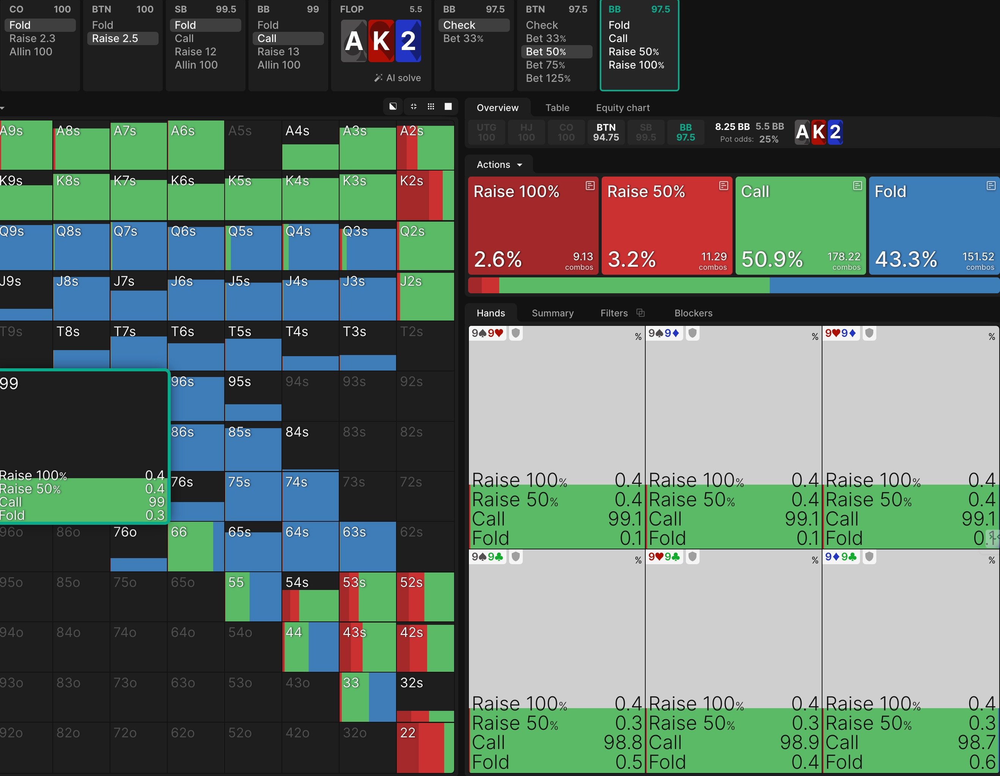
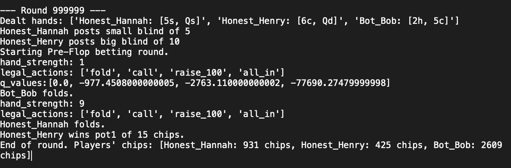
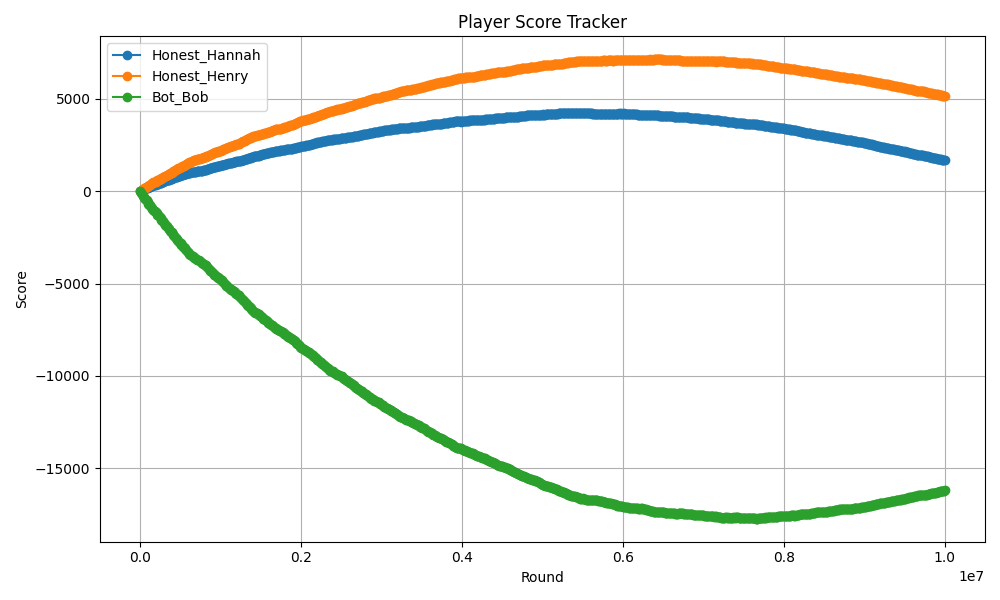
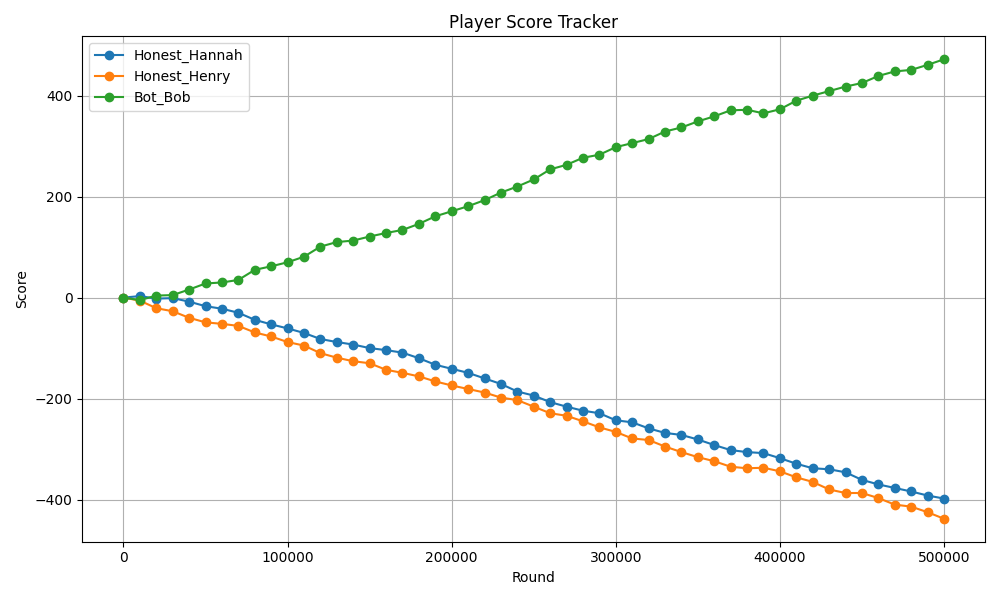
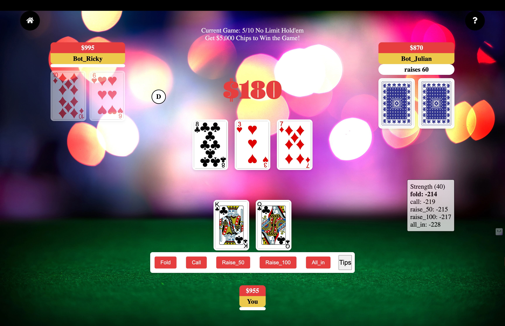

Recently, I've been obsessed with Texas Hold'em. It is a game that combines probability and luck with psychological battles. Is it bluff or not? Should I bluff or fold? These are simple questions. However, because there are many scenarios and opponents with different styles, no single answer will work all the time.
If you are unfamiliar with the game, this clips shows what happens in a poker betting round
The common solution is GTO (Game Theory Optimal), which uses a mix of strategies to become "unexploitable." It assumes optimal opponent behaviors and aims to reach an equilibrium that no one can outplay. It is perfect in the mathematical sense, but somewhat impratical, because human emotion and perception plays a huge part in this game.
For example, if a player has a good pocket pair, 99, and the flop comes A,K,2, They naturally fear that their opponent has an ace or king. Some will just wave the white flag and fold after opponent raise. According to GTO, that's a flawed decision and they should call 99% of the time. The logic is that folding medium hands like this will make us too vulnerable from bluffs. However, in reality, players don't bluff enough and most of the time will only bet if they actually have the ace. When that's the case, calling with 99 makes little sense.
Betting strategy from GTO Wizard
In past ML classes, I've learned about how reinforcement learning allows bots to improve by simulating and collecting rewards. I immediately thought it could apply to poker. So I decided to take a rule-based Q-Learning approach to explore the best strategy (policy) by playing against real players and maximize winnings.
How it Works
To integrate Q-learning, I need to represent the game's states, actions, and rewards. Rewards are simply the profits or losses. Actions can be boiled down to a few options - fold, check, call, raise small, raise big, and all in. The only challenge is to represent the game's states.
In Texas Hold'em, there are 2 hole cards that the player holds and 5 community cards. They produce the permutation of 52 choose 7, or about 675 billion different states. It is computationally impractical to ran many simulations for each of those states. So instead of using the cards directly, I choose to represent states using a few important metrics that human would use to make decisions.
- 1. Stage - Current stage of the game.
- 2. Position - Decides the order in which players bets. Players in later position have an edge as they have information on how their opponents acted before them.
- 3. Hand Strength (0-20) - Argugbly the most important metric. Becuase of the complexity of hand rankings, I use Monte Carlo experiments to deduce strength by simulating random opponent cards and count the number of times we win. Because of the high volumes of iterations needed, I used C/C++ components and made the runtime 30x faster than in python.
- 4. Pot Stack Ratio (0-10) - How big the pot is compared to the stack. Something a good poker player should pay attention to.
- 5. Action History - How the players acted.
Example from the Q Table

Classic Q Learning formula.
Note that each poker round should be treated independently and therefore discount factor and expected future values are not needed.
To train the Q Learning Bot, I set it up with 2 "honest" rule-based opponents who makes decisions directly correspond to the hand strength. The Q-Bot has a high initial exploration rate and low learning rate, meaning it will explore first random actions and collect rewards. After each round, it updates values in the Q Table. In later stages, the bot reduces exploration rate and increase learning rate to exploit the opponents with the strategy it learned (choosing state actions with the highest value in the Q Table).
Sample Game Log
Score Log of the first million simulations
As the graph shows, the bot took significant loses in the beginning as randomly choosing action is a terrible strategy. The bot learns that the hard way. Fortunately, as the bot learns, the downward curve becomes flat, and eventually, the bot begins reliably beating the honest bots after about 800k rounds.
The Q-Bot now reliably beats honest bots when it goes full exploitation mode
The Next Steps
It is exciting that an AI agent can beat an honest and predictable player without knowing any rules itself! But how will it fare against real players? I decide to test it myself. Using Javascript, JQuery, and pythonShell, I reused my python code to handle game logic and changes in the view model. Now I, or anyone on the web, can play against the Q-Bot. This can be a helpful exercise for players interested in leveling up their poker game. For the bot, it will adjust its Q Table by playing against real players, which can help it improve from the baseline.
Screenshot from Reinforced Poker gameplay
I consider myself to be a thinking poker player but I could not beat the bot at first, until I start to recognize its pattern. Its strategy right now is being overly aggresive with bad cards, because of the rewards gained from bluffing the honest bots. I believe once it gets more experience with real players who can catch its bluffs, it will lower its bluff frequency and change its strategy. This self correction mechanism will ensure it finds the most rewarding way of playing in the long term.